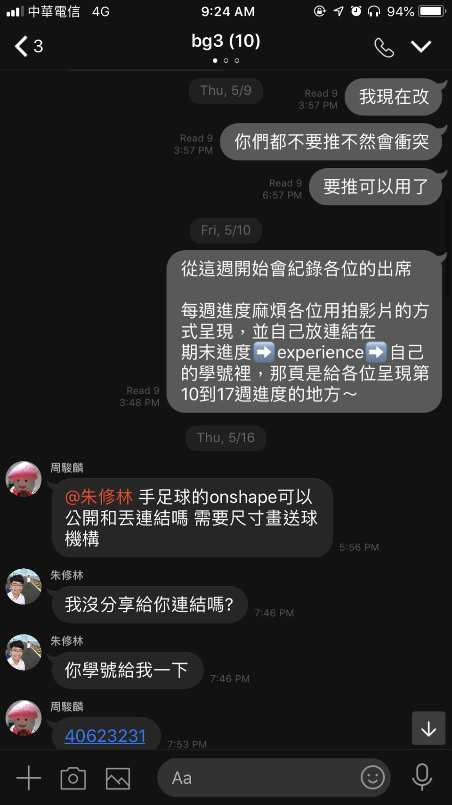

Experience
第十一週(2019.05.03)
進度 :
1.開始期末分組作業的工作分配，我被分配到"零件尺寸分析"
2.和繪圖組的確認後由我先進行尺寸分析再讓繪圖組修改尺寸
3.嘗試使用SolveSpace模擬尺寸

第十二週(2019.05.10)
進度 :
1.補上期中Bubble rob 過程影片(期中報告只有結果，沒拍過程)
第十三週(2019.05.17)
進度 :
1.完成尺寸分析(球員)
讓兩足球員呈現平行狀態時不會出現干涉，可以踢的到球且不會卡到地版

原圖手足球座的長為1422mm，若有八根桿子操控踢球員
126*7= 882
1422-882 = 540
守門員後面各有2.7cm的空間運用，所以尺寸分析算是得宜
第十四週(2019.05.24)
進度 :
1.細部設計
在球桌的四周加上圓弧角，以改善守門員踢不到兩側的狀況


2.更新分組網誌(更新組員進度)
第十五週(2019.05.31)
進度 :
1.建立個人期末倉儲(https://mdecadp2018.github.io/site-40623241/content/index.html)
2.著手開始做期末pdf報告
第十六週(2019.06.07)
進度 :
第十七週(2019.06.14)
進度 :
Introduction << Previous